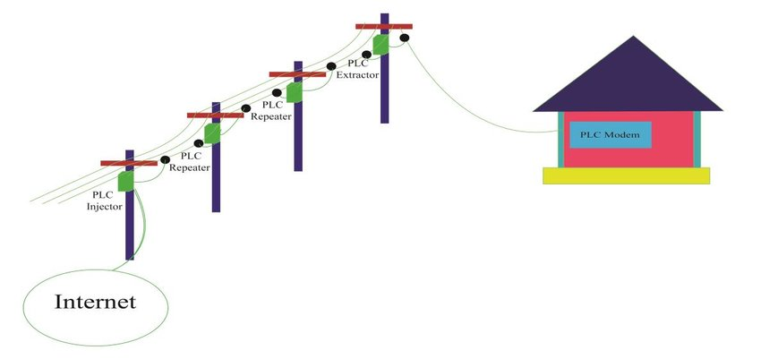
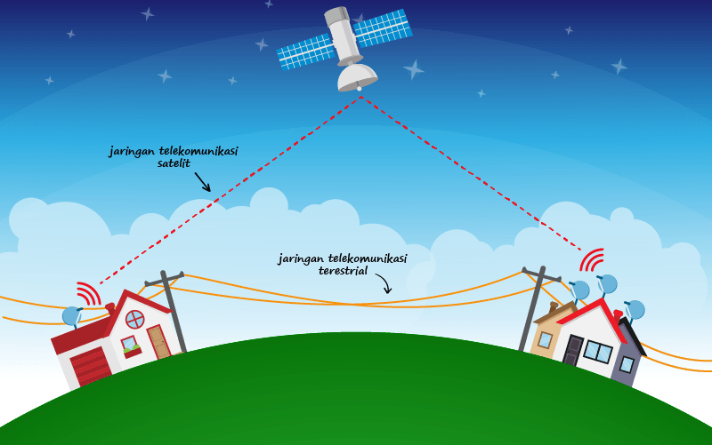

Jenis Jaringan Komputer berdasarkan Media Transmisi

- Jaringan Berkabel (Wired Network)
- Deskripsi: Jaringan yang menggunakan kabel fisik untuk mentransmisikan data
antara perangkat.
- Ethernet: Menggunakan kabel tembaga seperti twisted pair (misalnya, kabel Cat5,
Cat6) atau kabel koaksial untuk menghubungkan perangkat dalam jaringan.
- Keuntungan: Stabilitas dan kecepatan data yang tinggi, keamanan yang
lebih baik karena tidak mudah terganggu oleh interferensi.
- Kelemahan: Instalasi bisa lebih rumit dan membutuhkan lebih banyak
kabel, kurang fleksibel karena perangkat harus terhubung secara fisik.
- Fiber Optik: Menggunakan serat kaca atau plastik untuk mentransmisikan data
dalam bentuk cahaya. Biasanya digunakan untuk jaringan dengan kebutuhan kecepatan
tinggi dan jarak jauh.
- Keuntungan: Kecepatan data yang sangat tinggi, jarak transmisi yang
panjang, tahan terhadap interferensi elektromagnetik.
- Kelemahan: Biaya instalasi yang lebih tinggi dibandingkan kabel tembaga,
instalasi dan perawatan yang lebih kompleks.
- Jaringan Nirkabel (Wireless Network)
- Deskripsi: Jaringan yang menggunakan gelombang radio atau inframerah untuk
mentransmisikan data antara perangkat tanpa kabel fisik.
- Wi-Fi (Wireless Fidelity): Menggunakan gelombang radio untuk menghubungkan
perangkat dalam jarak tertentu melalui access point atau router.
- Keuntungan: Fleksibel dan mudah diinstal, memungkinkan mobilitas perangkat
yang tinggi.
- Kelemahan: Rentan terhadap interferensi, jarak transmisi terbatas, keamanan
yang lebih rentan terhadap serangan.
- Bluetooth: Teknologi nirkabel untuk komunikasi jarak pendek antara perangkat
seperti ponsel, komputer, dan perangkat IoT.
- Keuntungan: Konsumsi daya yang rendah, ideal untuk koneksi perangkat
personal.
- Kelemahan: Jarak transmisi sangat terbatas (biasanya sekitar 10 meter),
kecepatan transfer data yang relatif rendah.
- Infrared: Menggunakan sinar inframerah untuk transmisi data, biasanya digunakan
untuk remote control dan komunikasi antara perangkat dalam jarak sangat dekat.
- Keuntungan: Tidak terganggu oleh interferensi elektromagnetik.
- Kelemahan: Jarak transmisi sangat pendek, harus dalam garis pandang
langsung (line of sight).
- Jaringan Power Line Communication (PLC)
- Deskripsi: Jaringan yang menggunakan kabel listrik yang sudah ada untuk
mentransmisikan data. Menggunakan jaringan kabel listrik untuk mengirimkan data.
- Keuntungan: Menggunakan infrastruktur yang sudah ada, mengurangi kebutuhan untuk
menarik kabel tambahan.
- Kelemahan: Rentan terhadap interferensi dari perangkat listrik lain, kecepatan
dan stabilitas bisa dipengaruhi oleh kualitas jaringan listrik.
- Jaringan Satelit
- Deskripsi: Jaringan yang menggunakan satelit untuk mentransmisikan data, cocok
untuk daerah-daerah terpencil yang tidak terjangkau oleh infrastruktur kabel atau
jaringan seluler.
- Keuntungan: Cakupan geografis yang sangat luas, dapat mencapai daerah-daerah
terpencil.
- Kelemahan: Biaya tinggi, latensi (delay) yang lebih tinggi dibandingkan jaringan
berbasis darat.
